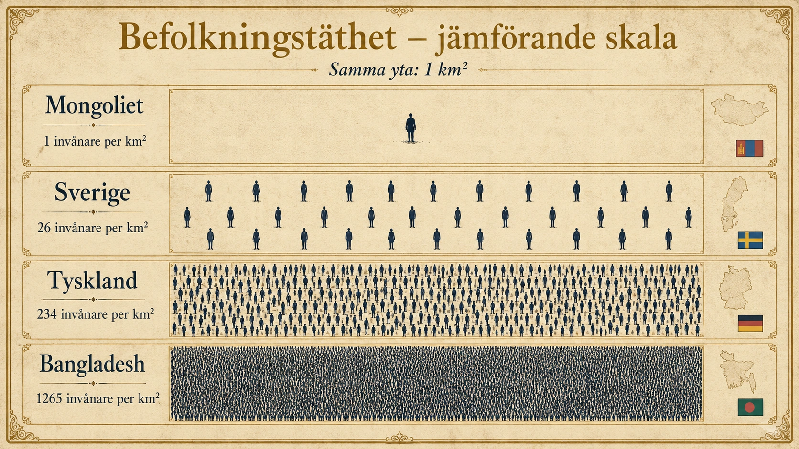
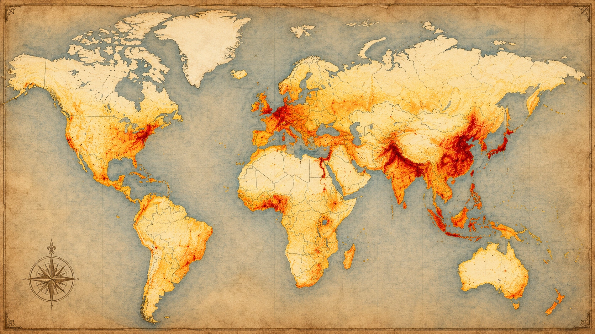
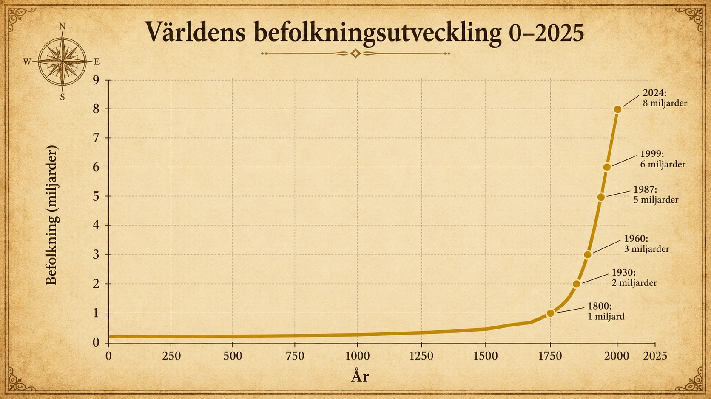

Jordens befolkning
Hur många är vi, var bor vi, och hur förändras befolkningen?
1. Hur är jordens befolkning fördelad?
Jorden befolkas i dag av drygt 8 miljarder människor, men de är långt ifrån jämnt fördelade över planetens yta. Om du tittar på en världskarta där varje invånare lyser som en liten prick skulle Asien glöda starkt, Afrika och Europa skulle vara klart upplysta, medan Sahara, Sibirien, Australiens inland och de stora regnskogarna i Amazonas vore nästan helt mörka.
Det vetenskapliga ämne som studerar denna fördelning och förändring kallas demografi. Demografer studerar hur stor en befolkning är – alltså alla människor som bor i ett område – men också hur befolkningen är sammansatt efter ålder och kön, och hur den förändras över tid.
För att jämföra hur tätt människor bor i olika områden använder vi begreppet befolkningstäthet. Den räknas ut genom att ta antalet människor i ett område – befolkningsmängden – och dela med ytan i kvadratkilometer. Bangladesh har en av världens högsta befolkningstätheter med över 1200 invånare per km², medan Mongoliet och Grönland har under 5. Sveriges genomsnitt ligger på cirka 26 invånare per km², men siffran döljer stora skillnader inom landet: Stockholms län har över 360 invånare per km², medan Norrbottens inland har under 1.

Varför är fördelningen så ojämn? Människor har alltid sökt sig till platser där det är lätt att leva: där det finns vatten, bördig jord, lagom klimat, möjligheter att arbeta och bra kommunikationer. Områdena vid Nilen, Ganges och Yangtze-floden blev tidigt tätbefolkade just därför. Andra platser är så kalla, torra eller höglänta att få människor har valt att bosätta sig där. Detta mönster fördjupar vi i nästa avsnitt om lokaliseringsfaktorer.

2. Befolkningens förändring över tid
Under större delen av mänsklighetens historia ökade världens befolkning mycket långsamt. Människor fick ofta många barn, men många dog också tidigt. Sjukdomar, svält, krig, dålig hygien och brist på medicinsk kunskap gjorde att dödligheten var hög. Det betydde att befolkningstillväxten – alltså den procentuella ökningstakten – var låg, även om många barn föddes. Före 1700-talet levde de flesta människor i jordbrukssamhällen där skördarna kunde variera kraftigt från år till år. Om skörden slog fel kunde det leda till hunger, sjukdomar och ökad dödlighet.
Från 1700-talet och framåt började detta långsamt förändras. Befolkningen började växa snabbare, först i delar av Europa och senare i andra delar av världen. En viktig orsak var att jordbruket utvecklades. Nya odlingsmetoder, bättre redskap, växelbruk och nya grödor som potatis gjorde att mer mat kunde produceras. När tillgången på mat ökade blev människor bättre närda, och färre dog av svält och svaghet.
Samtidigt förbättrades kunskaperna om hygien, sjukdomar och medicin. Under 1800- och 1900-talen blev detta ännu tydligare. Vaccin, rent vatten, avloppssystem, bättre bostäder och bättre sjukvård gjorde att fler människor överlevde. Särskilt viktigt var att barnadödligheten minskade. Tidigare var det vanligt att många barn dog innan de blev vuxna, men när fler barn överlevde till vuxen ålder blev befolkningsökningen – alltså antalet människor som tillkommer – kraftig. Befolkningstillväxt mäts alltså i procent, medan befolkningsökning mäts i antal människor.
Den industriella revolutionen påverkade också befolkningsutvecklingen. När fabriker, städer, järnvägar och nya arbeten växte fram förändrades människors sätt att leva. Många flyttade från landsbygden till städerna. Samtidigt ökade produktionen av varor, transporter blev effektivare och mat kunde fraktas längre sträckor. Det gjorde samhällen mindre beroende av enbart lokala skördar. Om ett område drabbades av missväxt kunde mat i större utsträckning transporteras dit från andra platser.
Under 1900-talet ökade världens befolkning mycket kraftigt. Den medicinska utvecklingen spreds till fler delar av världen, och många länder fick bättre tillgång till sjukvård, vaccin, rent vatten och förbättrad livsmedelsproduktion. Dödligheten sjönk snabbt i många länder samtidigt som födelsetalen ännu var höga. När många barn föds samtidigt som färre människor dör växer befolkningen mycket snabbt. År 1800 fanns cirka 1 miljard människor på jorden. År 1930 var vi 2 miljarder. År 2024 passerade vi 8 miljarder.

Den stora förändringen var alltså inte att människor började få fler barn. Den avgörande förändringen var att färre människor dog tidigt. Bättre mat, bättre hygien, bättre sjukvård och bättre levnadsvillkor gjorde att fler överlevde.
3. Att se framåt – befolkningsprognoser
För att kunna planera samhället behöver vi kunna förutsäga hur befolkningen kommer att utvecklas. En befolkningsprognos är en beräkning av hur stor en befolkning kommer att vara i framtiden. Demografer använder dagens åldersfördelning tillsammans med antaganden om födelsetal, dödstal och migration för att räkna ut hur det troligen ser ut om tio, tjugo eller femtio år.
FN gör regelbundet prognoser för hela världens befolkning. Deras nuvarande beräkning är att vi blir omkring 9,7 miljarder år 2050 och att tillväxten sedan långsamt avtar. Vid år 2100 räknar de med att världens befolkning ligger någonstans mellan 9 och 12 miljarder beroende på hur födelsetalen utvecklas.
Prognoser är inte spådomar – de är kvalificerade beräkningar med en viss osäkerhet. Men de är ändå avgörande för att samhällen ska kunna planera. Staten behöver veta hur många skolor som ska byggas om femton år. Kommunen behöver veta hur stor äldreomsorgen behöver vara. Företag behöver veta var arbetskraften kommer att finnas. Sjukvården behöver veta hur sjukdomsbördan förändras när befolkningen blir äldre. Utan prognoser skulle samhället bygga skolor som står tomma, sjukhus som inte räcker, och pensionssystem som inte håller ihop.
4. Konsekvenser – växande och krympande befolkningar
Befolkningstillväxten ser inte längre likadan ut överallt. I många rika länder har födelsetalen minskat kraftigt. När samhällen industrialiseras, utbildningsnivån stiger, kvinnor får större möjligheter till utbildning och arbete, barnadödligheten minskar och människor får tillgång till preventivmedel, brukar familjer i genomsnitt få färre barn. I sådana länder kan befolkningen växa långsamt, stå stilla eller till och med minska. Japan har redan idag en krympande befolkning, och flera europeiska länder är på väg åt samma håll. Samtidigt finns länder, framför allt i Afrika söder om Sahara, där födelsetalen fortfarande är höga och befolkningen ökar snabbt.
Båda situationerna ger samhället utmaningar – men olika utmaningar.
En växande befolkning behöver fler skolor, fler bostäder, fler arbeten och mer infrastruktur. Resurserna måste räcka åt allt fler. Om jobben inte hänger med kan ungdomsarbetslösheten bli hög, vilket i sin tur kan leda till social oro eller migration. Samtidigt har en växande befolkning också potential: många unga människor kan driva ekonomin, skapa nya idéer och bygga framtiden.
En krympande befolkning ger andra problem. Antalet äldre växer i förhållande till antalet i arbetsför ålder. Pensionssystem och äldreomsorg blir tyngre att finansiera. Skolor kan behöva stängas i glesbygd. Vissa orter avfolkas helt. Företag kan ha svårt att hitta arbetskraft. Sverige hör till de länder som länge balanserat detta genom invandring – utan den hade vår befolkningstillväxt redan vänt nedåt.
Att förstå demografi är därför avgörande för att förstå vår samtid. Befolkningens storlek och åldersstruktur påverkar ekonomi, arbetsmarknad, skolor, sjukvård, bostäder, migration och miljö. När vi ser hur olika delar av världen befinner sig i olika skeden av denna utveckling kan vi också börja förstå varför världen ser ut som den gör – och vart den är på väg.
1. Hur är jordens befolkning fördelad?
På jorden lever idag drygt 8 miljarder människor. Men vi bor inte jämnt över hela jorden. Asien har mycket folk. Sahara, Sibirien och Australiens inland har få.
Demografi är vetenskapen om befolkningar. En befolkning är alla människor som bor i ett område. Demografer räknar hur många vi är, var vi bor, och hur det förändras.
För att jämföra olika områden använder vi befolkningstäthet. Det betyder hur tätt människor bor. Räkningen är enkel: ta antalet människor i ett område (befolkningsmängden) och dela med ytan i kvadratkilometer.
Här är några exempel:
- Bangladesh: över 1200 människor per km² (mycket tätt)
- Sverige: cirka 26 människor per km²
- Mongoliet: under 5 människor per km² (mycket glest)
Bilden visar fyra länder. Varje ruta är lika stor — exakt 1 km² (en kvadratkilometer). Det enda som skiljer rutorna är hur många människor som bor där.
- Räkna ungefär hur många människor som står på Mongoliets ruta.
- Titta på Sveriges ruta. Hur många fler är det än i Mongoliet?
- Titta på Tysklands ruta. Kan du fortfarande räkna varje person?
- Titta sedan på Bangladeshs ruta. Vad ser du?
Fundera: Hur tror du det är att bo där det är så tätt — och hur är det att bo där det är så glest?
Även inom Sverige är skillnaderna stora. I Stockholms län bor över 360 människor per km². I Norrbottens inland bor mindre än 1.
Varför bor vi så ojämnt? Människor söker sig till platser som är lätta att leva på. Där finns vatten, bra jord, lagom klimat, jobb och bra kommunikationer. Vid floder som Nilen och Ganges blev det därför tidigt mycket folk. Andra platser är för kalla, torra eller för höga. Där bor få.
På kartan visar mörkröda områden att det bor väldigt många människor på liten yta. Ljusgula och vita områden betyder att få människor bor där.
- Leta upp Asien. Vad ser du? Var är det allra rödast?
- Hitta Sahara i Afrika och Sibirien i norra Ryssland. Hur ser de ut?
- Titta på Australien. Var bor folk? Var bor de inte?
Fundera: Människor bor inte överallt. Vad tror du gör att vissa områden är så mörka och tomma?
2. Befolkningens förändring över tid
Förr ökade världens befolkning långsamt. Människor fick många barn, men många dog tidigt. Sjukdomar, hunger, krig och dålig hygien gjorde att många dog unga. Därför var befolkningstillväxten låg — det vill säga ökningstakten i procent.
Före 1700-talet levde de flesta människor av jordbruk. Om skörden blev dålig blev det hunger och sjukdom.
På 1700-talet började något ändras. Jordbruket utvecklades. Bättre redskap, växelbruk och nya grödor som potatis gav mer mat. När folk fick mer att äta dog färre.
På 1800- och 1900-talen blev det ännu bättre. Vaccin, rent vatten, avlopp och bättre sjukvård gjorde att fler överlevde. Särskilt barn. Förr dog många barn unga. När fler barn fick leva till vuxen ålder blev befolkningsökningen stor — det vill säga antalet människor som tillkommer.
Tänk så här: Befolkningstillväxt mäts i procent. Befolkningsökning mäts i antal människor.
Industrialiseringen påverkade också. Folk flyttade till städerna. Maten kunde transporteras längre. Om skörden slog fel i ett område kunde mat skickas dit från ett annat.
Under 1900-talet växte befolkningen mycket snabbt:
- År 1800: 1 miljard människor
- År 1930: 2 miljarder
- År 2024: 8 miljarder
Bilden är en kurva. År står längst ner, antal människor i miljarder står till vänster.
- Följ kurvan från år 0 med fingret. Vad gör den fram till år 1700? Den ligger nästan platt.
- Vad händer sedan? Kurvan vänder uppåt och blir nästan lodrät.
- Hitta år 1800 (1 miljard) och år 1930 (2 miljarder). Det tog 130 år att gå från 1 till 2 miljarder.
- Hitta år 1999 (6 miljarder) och år 2024 (8 miljarder). Det tog bara 25 år att gå från 6 till 8 miljarder.
Fundera: Vad tror du har gjort att kurvan plötsligt rusar uppåt så snabbt?
Den stora förändringen var alltså INTE att vi började få fler barn. Förändringen var att färre människor dog tidigt.
3. Att se framåt – befolkningsprognoser
För att planera samhället behöver vi veta hur befolkningen kommer att vara i framtiden. En befolkningsprognos är en uträkning av hur stor en befolkning blir senare.
FN gör prognoser för hela världen. De räknar med:
- År 2050: ungefär 9,7 miljarder människor
- År 2100: någonstans mellan 9 och 12 miljarder
Prognoser är inte spådomar. Det är uträkningar med viss osäkerhet. Men de är ändå viktiga. Staten behöver veta hur många skolor som ska byggas. Kommunen behöver veta hur stor äldreomsorgen ska vara. Företag behöver veta var det finns människor att anställa.
Utan prognoser skulle samhället bygga skolor som blir tomma och sjukhus som inte räcker.
4. Växande och krympande befolkningar
Befolkningen växer inte lika snabbt överallt längre.
I rika länder föds färre barn idag. Det beror på flera saker. Människor utbildar sig längre. Kvinnor jobbar mer. Barn dör inte lika ofta. Och man kan välja att inte få barn. I dessa länder växer befolkningen långsamt. Vissa länder krymper. Japan har redan färre människor varje år. Flera länder i Europa följer efter.
I andra länder, särskilt i Afrika söder om Sahara, föds fortfarande många barn. Där växer befolkningen snabbt.
Båda situationerna ger problem — men olika problem.
En växande befolkning behöver fler skolor, bostäder och jobb. Om jobben inte räcker kan unga bli arbetslösa. Men många unga kan också ge fart åt ekonomin.
En krympande befolkning har andra problem. När de äldre blir fler och de yngre färre blir det svårt att betala pensioner. Skolor kan tvingas stänga. Företag har svårt att hitta arbetskraft. Sverige har länge balanserat detta med invandring.
Att förstå demografi hjälper oss förstå vår tid. Befolkningens storlek påverkar ekonomi, jobb, skolor, sjukvård, bostäder och miljö. När olika delar av världen är i olika faser kan vi förstå mer om hur världen ser ut — och vart den är på väg.
1. Var bor människor – och varför just där?
I geografin används två gamla begrepp för att beskriva fördelningen: ekumen och anökumen. Ekumen är den bebodda jordytan, anökumen den obebodda. Däremellan finns subökumen — glest bebodda områden. Idag har människan i praktiken besökt hela jordytan, men endast cirka 10 procent av landytan bär nästan 90 procent av världens befolkning.
Den siffran är värd att stanna vid. Den säger oss att befolkningsfördelning inte handlar om en binär uppdelning i "bebott" och "obebott", utan om en kraftig koncentration. Stora delar av jordytan — öknar, kalfjäll, regnskogar, polarområden — är extremt glest befolkade trots att människor formellt kan leva där.
Höjd över havet är en faktor som ofta glöms bort. Få människor bor över 2000 meter. Luften är tunnare, klimatet kallare och jordbruk svårare. Men det finns undantag: La Paz i Bolivia ligger på 3600 meters höjd, Lhasa i Tibet på 3700, Mexico City på över 2200. När människor bosatt sig högt har det oftast funnits historiska skäl — gruvor, försvarbara lägen, religiösa centra.
Det är också viktigt att förstå att dagens fördelning inte bara har naturliga orsaker. Den europeiska kolonialismen från 1500-talet och framåt flyttade människor över världen i enorm skala. Den transatlantiska slavhandeln tvångsförflyttade över 12 miljoner människor från Afrika till Amerika. Idag har Amerika därför stora befolkningsgrupper med afrikanska rötter. Modernare arbetskraftsinvandring — från Mellanöstern till Europa, från Sydostasien till Gulfstaterna — fortsätter att forma fördelningen. Demografi är inte bara natur. Den är också historia.
2. Befolkningens svängningar genom tiden
Den långsamma tillväxten före 1700-talet rymmer dramatiska svängningar som lätt försvinner i den stora linjen. Pesten som drabbade Europa 1347–1351 dödade omkring en tredjedel av befolkningen på fyra år — uppskattningsvis 25 till 50 miljoner människor. Det tog tvåhundra år för Europas befolkning att återhämta sig. Den spanska sjukan 1918–1920 dödade troligen omkring 50 miljoner människor globalt — fler än första världskriget. Demografiska chocker av detta slag är inte abstrakta siffror; de förändrade arbetsmarknader, jordbruk, religion och politik i grunden.
År 1798 publicerade den engelska ekonomen Thomas Malthus ett verk där han förutsade att befolkningen alltid skulle växa fortare än matproduktionen, och att hunger, sjukdom och krig därför var ofrånkomliga regulatorer av folkmängden. Han trodde att människan satt fast i en fälla. Malthus underskattade två saker: människans förmåga att förbättra jordbruket, och människans förmåga att frivilligt få färre barn. Båda dessa visade sig vara nycklar till en helt annan utveckling än den han föreställde sig.
En överraskande detalj är att världens befolkningstillväxt redan har börjat avta. Den högsta procentuella tillväxttakten någonsin var omkring år 1968 — då växte världens befolkning med drygt 2 procent per år. Idag är samma siffra under 1 procent. Den hockeyklubbformade kurvan i bilden visar antalet människor, inte tillväxttakten — och takten är på väg ner sedan ett halvsekel. Antalet människor fortsätter däremot att öka, eftersom procenten räknas av en mycket större befolkning. Det är skillnaden mellan att åka snabbare och att accelerera.
3. Hur prognoser byggs – och varför de ibland slår fel
Befolkningsprognoser bygger på en metod som kallas kohortmetoden. Demografer delar in befolkningen i åldersgrupper (kohorter), antar hur många i varje grupp som dör varje år, och hur många barn varje åldersgrupp av kvinnor föder. Resultatet blir en projicerad befolkning några decennier framåt. Eftersom de flesta som lever om 30 år redan är födda blir prognoser för 30 år framåt ganska säkra. Längre fram blir osäkerheten större.
FN publicerar därför tre scenarier istället för en siffra: ett högt, ett medel- och ett lågt alternativ. De skiljer sig främst i antaganden om hur många barn varje kvinna kommer att få. Skillnaden mellan scenarierna är överraskande stor: vid år 2100 spänner FN:s prognos från omkring 9 till 12 miljarder människor. Det är osäkerheten i hur dagens fertilitet utvecklas, summerad över 75 år.
Historien har gott om prognoser som slog fel. Biologen Paul Ehrlich gav 1968 ut boken The Population Bomb, där han förutsade massvält under 1970- och 80-talen på grund av befolkningsexplosionen. Tankesmedjan Romklubben publicerade 1972 rapporten Limits to Growth med liknande mörka prognoser. Båda visade sig vara fel — åtminstone i tidsperspektivet. Det som gick fel var inte själva matematiken utan antagandena: ingen hade förutsett hur snabbt fertiliteten skulle sjunka i många länder, eller hur dramatiskt jordbrukets produktivitet skulle öka under den så kallade gröna revolutionen. Läxan är viktig: en prognos är aldrig säkrare än sina antaganden, och antaganden är ofta känsliga för förändringar som ingen ser komma.
4. När åldersstrukturen formar samhället
En växande eller krympande befolkning är bara två sidor av en djupare fråga: hur ser åldersstrukturen ut? Demografer mäter detta med försörjningskvoten — förhållandet mellan dem som inte arbetar (barn och äldre) och dem som arbetar. När försörjningskvoten är låg har ett samhälle ekonomiskt utrymme: många arbetsföra ska försörja relativt få. Den perioden kallas ibland för en demografisk dividend — ett fönster då ett land har ovanligt få att försörja och därför kan investera i utbildning, infrastruktur och företagande. Sydkorea utnyttjade en sådan period från 1960-talet och framåt och förvandlades på fyra decennier från fattigdom till en av världens rikaste ekonomier.
Idag är problemet på många håll det motsatta. Sydkorea har idag världens lägsta fertilitet — under 0,8 barn per kvinna. Om inget ändras kommer Sydkoreas befolkning halveras inom ett halvt sekel. Flera regeringar har försökt vända utvecklingen med pronatalistisk politik — ekonomiska bidrag, förlängd föräldraledighet, bostadsförmåner. Ungern har lagt en betydande del av sin statsbudget på sådana stöd. Resultaten är ändå blygsamma. Det visar sig vara mycket svårt att politiskt få människor att vilja ha fler barn när de väl valt ett annat livsmönster.
Migration är det andra verktyget. När Tyskland 2015 tog emot omkring en miljon flyktingar fick det långsiktiga effekter på landets befolkningskurva — utan invandring hade Tysklands befolkning krympt redan idag. Men att förlita sig på migration är inte en evig lösning, eftersom migranter också åldras.
Demografin är därför ett av samhällets mest svårhanterliga politiska områden. Små förändringar i fertilitet eller migration får stora effekter över tre, fyra decennier — men besluten som påverkar dem visar sina konsekvenser långt bortom alla regeringsperioder. Det är det som gör demografisk planering så svår, och så avgörande.
Vill du veta mer?
Här kan du testa dina kunskaper med korta frågor och flipcards. Båda momenten är formativa – du får omedelbar återkoppling.
Redogörande frågor
Här kommer 3-5 frågor med textinmatning och regelbaserad återkoppling. Implementeras separat.
Flipcards
Laddar flipcards …
Laddar frågor ...
Avsnittsmall för demografi-piloten. Funktionerna fylls på i kommande steg.